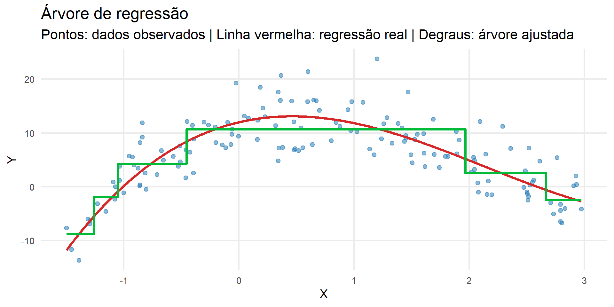
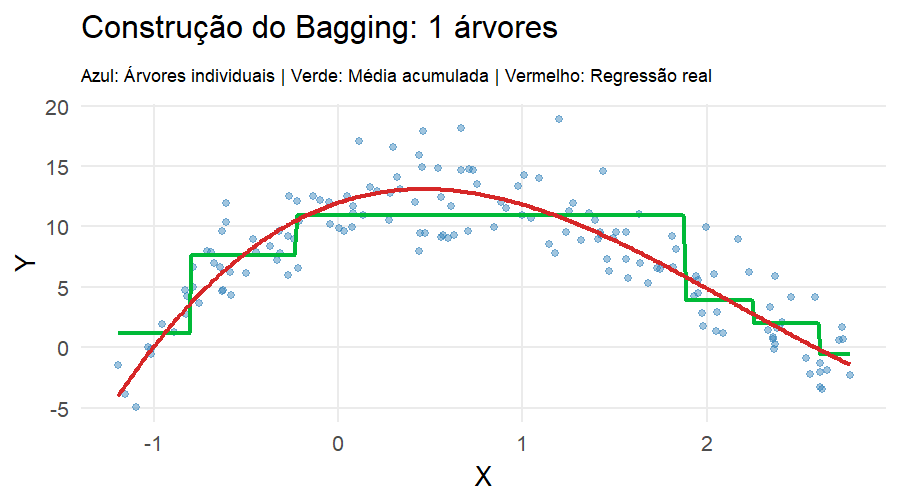
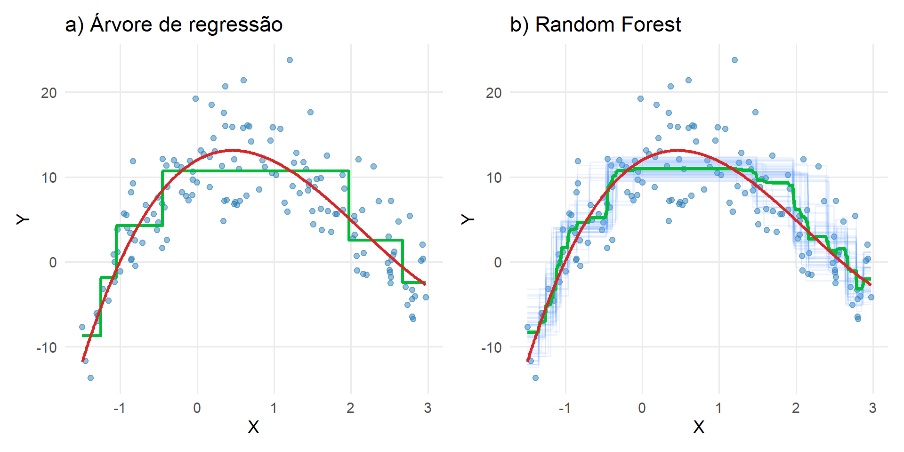
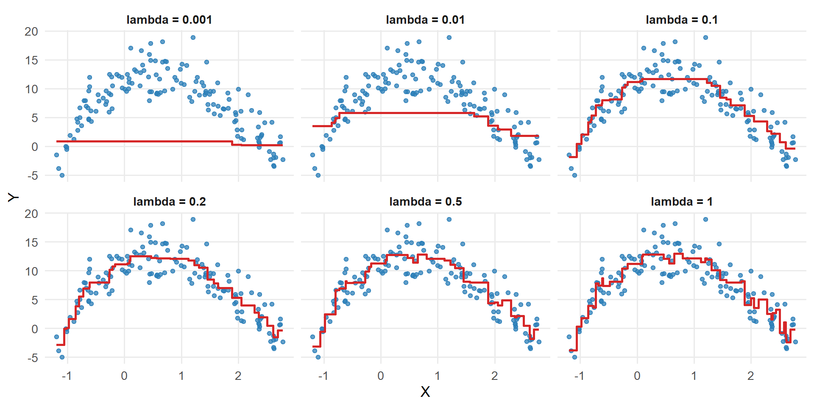
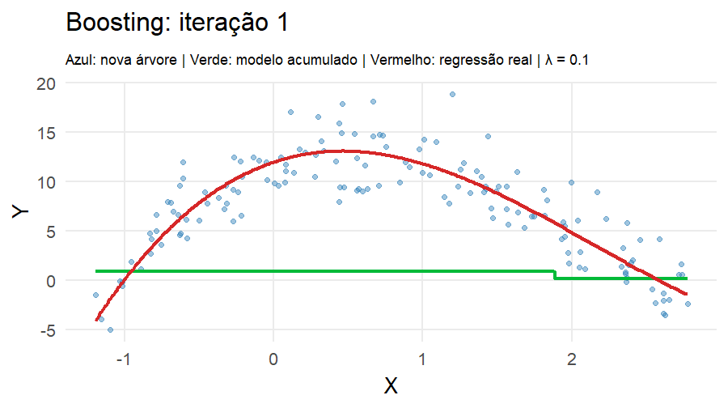
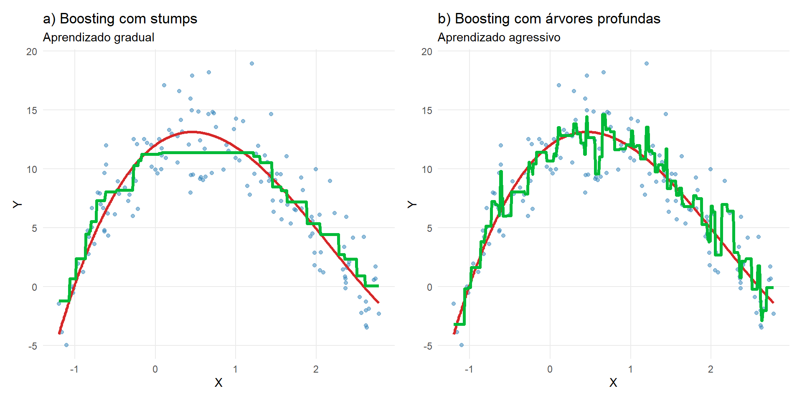

Parte I : Aprendizado Supervisionado
Árvores, Bagging, Random Forest e Boosting
Árvores de regressão
Uma estratégia diferente
Até agora, modelamos \(g(\mathbf{x})\) como uma função suave:
- splines
- kernels
- regressão local
Agora adotamos uma abordagem diferente:
modelar \(g(\mathbf{x})\) por partições do espaço das covariáveis.
Ideia central
Uma árvore de regressão divide o espaço de entrada em regiões:
\[ \mathcal{R}_1, \mathcal{R}_2, \ldots, \mathcal{R}_M \]
e define:
\[ \hat{g}(\mathbf{x}) = \sum_{m=1}^M c_m \mathbf{I}(\mathbf{x} \in \mathcal{R}_m) \]
Para cada região \(\mathcal{R}_m\), usamos:
\[ c_m = \frac{1}{|\mathcal{R}_m|} \sum_{i:x_i \in \mathcal{R}_m} y_i \]

Problema de estimação
Queremos encontrar a melhor partição:
\[ \{\mathcal{R}_1, \ldots, \mathcal{R}_M\} \]
Critério de qualidade
A qualidade da árvore é medida por:
\[
\mathcal{P}(T) =
\sum_{m=1}^M \sum_{i:x_i \in \mathcal{R}_m}
(y_i - c_m)^2
\]
Interpretação do critério
- mede a variabilidade dentro das regiões
- regiões boas → valores de \(y\) homogêneos
- objetivo → minimizar a variância intra-região
Dificuldade do problema
Minimizar \(\mathcal{P}(T)\) globalmente é:
- computacionalmente inviável
- envolve todas as possíveis partições
Solução prática
Utilizamos uma abordagem gulosa:
- escolhemos a melhor divisão local
- repetimos recursivamente
Divisão em um nó
Para cada variável \(X_j\) e ponto \(s\):
\[ \mathcal{R}_1 = \{x: x_j \leq s\}, \quad \mathcal{R}_2 = \{x: x_j > s\} \]
Melhor divisão
Escolhemos \((j,s)\) que minimiza:
\[ \sum_{i \in \mathcal{R}_1} (y_i - c_{m_1})^2 + \sum_{i \in \mathcal{R}_2} (y_i - c_{m_2})^2 \]
Construção completa
- Começa com todos os dados
- Escolhe melhor split
- Divide
- Repete
Overfitting
A árvore completa tende a:
- ajustar demais os dados
- ter alta variância
Poda (pruning)
Árvores completas tendem a sobreajustar os dados.
A poda consiste em escolher uma subárvore que minimize:
\[ \sum_{m=1}^{|T|} \sum_{i:x_i \in \mathcal{R}_m} (y_i - c_m)^2 + \alpha |T| \]
-
\(|T|\) = número de folhas (complexidade da árvore)
- \(\alpha\) controla o trade-off entre ajuste e simplicidade
Valores grandes de \(\alpha\) produzem árvores menores e mais estáveis.

Interpretação da árvore de regressão
A linha tracejada representa a função verdadeira que gerou os dados.
A curva em degraus representa a árvore ajustada, que aproxima a função de regressão por regiões nas quais a predição é constante.
Isso evidencia que árvores de regressão constroem estimadores do tipo piecewise constante.
Vantagens das Árvores de Regressão
Além de serem facilmente interpretáveis, árvores apresentam propriedades importantes:
Variáveis categóricas
Árvores lidam naturalmente com variáveis discretas:
\[ X_1 \in \{\text{verde}, \text{vermelho}\} \]
- não é necessário criar variáveis dummy
- as divisões são feitas diretamente nas categorias
Seleção automática de variáveis
- variáveis irrelevantes tendem a não ser utilizadas
- o modelo realiza seleção de variáveis de forma implícita
Interações entre variáveis
- árvores capturam interações automaticamente
- não é necessário especificar termos de interação
Limitação importante
Apesar dessas vantagens:
- árvores individuais têm alta variância
- pequenas mudanças nos dados podem gerar árvores muito diferentes
Para melhorar o desempenho preditivo:
combinamos várias árvores em um único modelo
Por que combinar árvores?
Considere dois estimadores \(g_1(\mathbf{x})\) e \(g_2(\mathbf{x})\).
Definimos o estimador combinado:
\[ g(\mathbf{x}) = \frac{g_1(\mathbf{x}) + g_2(\mathbf{x})}{2} \]
O erro esperado é:
\[ \mathbb{E}\big[(\boldsymbol{y} - g(\mathbf{x}))^2 \mid \mathbf{x}\big] = \mathbb{V}(\boldsymbol{y} \mid \mathbf{x}) + \frac{1}{4}\mathbb{V}(g_1(\mathbf{x}) + g_2(\mathbf{x})) + \text{bias}^2 \]
Se \(g_1(\mathbf{x})\) e \(g_2(\mathbf{x})\) são:
- não viesados
- com mesma variância
- não correlacionados
então:
\[ \mathbb{E}\big[(\boldsymbol{y} - g(\mathbf{x}))^2 \mid \mathbf{x}\big] = \mathbb{V}(\boldsymbol{y} \mid \mathbf{x}) + \frac{1}{2}\mathbb{V}(g_i(\mathbf{x})) \]
Conclusão
\[ \mathbb{E}\big[(\boldsymbol{y} - g(\mathbf{x}))^2 \mid \mathbf{x}x\big] \le \mathbb{E}\big[(\boldsymbol{y} - g_i(\mathbf{x}))^2 \mid \mathbf{x}\big] \]
Assim, combinar modelos:
- mantém o viés
- reduz a variância
Ideia central do Bagging
Média de vários modelos instáveis → modelo mais estável
Bagging (Bootstrap Aggregating)
A ideia central é combinar vários estimadores:
\[ g(\mathbf{x}) = \frac{1}{B} \sum_{b=1}^B g_b(\mathbf{x}) \]
onde \(g_b(\mathbf{x})\) é a predição da \(b\)-ésima árvore.
Para cada \(b = 1, \ldots, B\):
- amostramos com reposição (bootstrap)
- ajustamos uma árvore aos dados

Propriedade fundamental
Se os estimadores são aproximadamente não viesados:
- o viés permanece semelhante
- a variância é reduzida
Assim,
\[ \mathbb{E}[(\boldsymbol{y} - g(\mathbf{x}))^2 \mid \mathbf{x}] \le \mathbb{E}[(\boldsymbol{y} - g_b(\mathbf{x}))^2 \mid \mathbf{x}] \]
Importância de Variáveis em Árvores
Bagging permite medir a relevância de cada variável:
- baseada na redução do erro (RSS)
- cada divisão reduz a variabilidade
A qualidade de uma divisão é medida pela redução do erro quadrático (RSS).
Considere um nó pai dividido em dois nós:
- esquerda (\(\mathcal{R}_{esq}\))
- direita (\(\mathcal{R}_{dir}\))
Redução do erro
A redução no RSS é dada por:
\[ \text{RSS}_{pai} - \text{RSS}_{esq} - \text{RSS}_{dir} \]
Ou, explicitamente:
\[ \sum_{i \in \mathcal{R}_{pai}} (y_i - \bar{y}_{pai})^2 - \sum_{i \in \mathcal{R}_{esq}} (y_i - \bar{y}_{esq})^2 - \sum_{i \in \mathcal{R}_{dir}} (y_i - \bar{y}_{dir})^2 \]
Interpretação
- quanto maior a redução → melhor a divisão
- boas variáveis geram partições mais homogêneas
Variáveis importantes são aquelas que mais reduzem a variabilidade da resposta.

Florestas Aleatórias (Random Forest)
No Bagging, combinamos várias árvores:
\[ g(\mathbf{x}) = \frac{1}{B} \sum_{b=1}^B g_b(\mathbf{x}) \]
Como as amostras bootstrap não são i.i.d,
- Cada árvore é diferente, mas nasce do mesmo mecanismo, então têm variâncias semelhantes, ou seja,
\[ \mathrm{Var}(g_b(\mathbf{x})) = \sigma^2 \quad \text{para todo } b \]
- As árvores não são independentes, mas podemos resumir essa dependência por uma correlação média. Assim, a correlação entre quaisquer duas árvores é
\[ \mathrm{Cor}(g_b(\mathbf{x}),g_{b'}(\mathbf{x})) = \rho \quad (b \neq b') \]
Logo,
\[ \mathrm{Cov}(g_b(\mathbf{x}),g_{b'}(\mathbf{x})) = \rho \sigma^2 \]
Então,
\[ \mathrm{Var}\!\big(g(\mathbf{x}) \big) = \mathrm{Var}\!\left(\frac{1}{B}\sum_{b=1}^{B} g_b(\mathbf{x})\right) = \frac{1}{B^2}\mathrm{Var}\!\left(\sum_{b=1}^{B} g_b(\mathbf{x})\right) \]
Expandindo a variância da soma:
\[ \mathrm{Var}\!\left(\sum_{b=1}^{B} g_b(\mathbf{x})\right) = \sum_{b=1}^{B}\mathrm{Var}(g_b\big(\mathbf{x})\big) + \sum_{b \neq b'}\mathrm{Cov}\big(g_b(\mathbf{x}),g_{b'}(\mathbf{x})\big) \]
Substituindo as hipóteses:
\[ \sum_{b=1}^{B}\mathrm{Var}\big(g_b(\mathbf{x})\big)=B\sigma^2 \]
e
\[ \sum_{b \neq b'}\mathrm{Cov}\big(g_b(\mathbf{x}),g_{b'}(\mathbf{x})\big) = B(B-1)\rho\sigma^2 \]
Portanto,
\[ \mathrm{Var}\!\left(\sum_{b=1}^{B} g_b(\mathbf{x})\right) = B\sigma^2 + B(B-1)\rho\sigma^2 \]
e, assim,
\[ \mathrm{Var}\!\left(g(\mathbf{x})\right) = \frac{1}{B^2} \left[ B\sigma^2 + B(B-1)\rho\sigma^2 \right] \]
Simplificando,
\[ \mathrm{Var}\!\big(g(\mathbf{x})\big) = \frac{\sigma^2}{B} + \frac{B-1}{B}\rho\sigma^2 \]
ou, equivalentemente,
\[ \boxed{ \mathrm{Var}\!\big(g(\mathbf{x})\big) = \rho\sigma^2 + \frac{1-\rho}{B}\sigma^2 } \]
Note que,
- \(\rho\sigma^2\) é a parte da variância que não desaparece com o aumento de \(B\)
- \(\dfrac{1-\rho}{B}\sigma^2\) é a parte que cai com o número de árvores
Consequência importante
- se \(\rho\) é pequeno, o bagging reduz bastante a variância
- se \(\rho\) é grande, o ganho é limitado
Além disso,
- mesmas variáveis dominantes
- divisões semelhantes
- predições parecidas
Problema
A redução de variância depende da correlação:
árvores muito parecidas → pouco ganho ao combinar
Ideia do Random Forest
Introduzir aleatoriedade adicional:
em cada nó, escolhemos um subconjunto aleatório de variáveis
Construção
Para cada árvore:
- amostra bootstrap dos dados
- em cada divisão:
- seleciona-se aleatoriamente \(m\) variáveis
- escolhe-se o melhor split entre elas
Parâmetro chave
\(m\) = número de variáveis candidatas por split
- \(m = d \rightarrow\) Bagging
- \(m < d \rightarrow\) Random Forest
\[ m \approx \frac{d}{3} \]



Boosting
O boosting constrói o estimador de forma sequencial, corrigindo erros do modelo anterior.
Ideia central
Começamos com um modelo simples e vamos ajustando os resíduos:
\[ r_i = y_i - g(x_i) \]
Algoritmo
- Inicialize:
\[ g(\mathbf{x}) = 0 \]
- Para \(b = 1, \dots, B\):
- Ajuste um modelo simples (ex: árvore rasa) aos resíduos:
\[ r_i = y_i - g(x_i) \]
- Atualize:
\[ g(\mathbf{x}) \leftarrow g(\mathbf{x}) + \lambda g^{(b)}(\mathbf{x}) \]
Parâmetros importantes
- \(B\) → número de iterações (\(B \approx 1000\))
-
\(\lambda\) → learning rate, tipicamente pequeno (\(\lambda \approx 0,01\))
- \(\lambda\) grande → aprendizado rápido → risco de overfitting
- \(\lambda\) pequeno → aprendizado lento → mais estável
- \(p\) → complexidade da árvore (\(p = 2\) ou \(p = 4\))
Observação
- cada modelo aprende o que o anterior errou
- reduz viés (diferente do bagging)


Boosting e Estimadores Fracos
O boosting não é restrito ao uso de árvores.
Podemos usar qualquer modelo como base, desde que seja um estimador fraco.
O que é um estimador fraco?
- modelo simples
- baixo poder preditivo individual
- pequeno viés de ajuste
Exemplos: árvores rasas (stumps), regressão linear simples, modelos com poucos parâmetros
Por que usar modelos fracos?
- evitam overfitting em cada etapa
- permitem correções graduais
- tornam o aprendizado mais estável
Se você usar modelos muito complexos (ex: árvores profundas):
👉 boosting pode superajustar rapidamente

EST335 — Semana 7